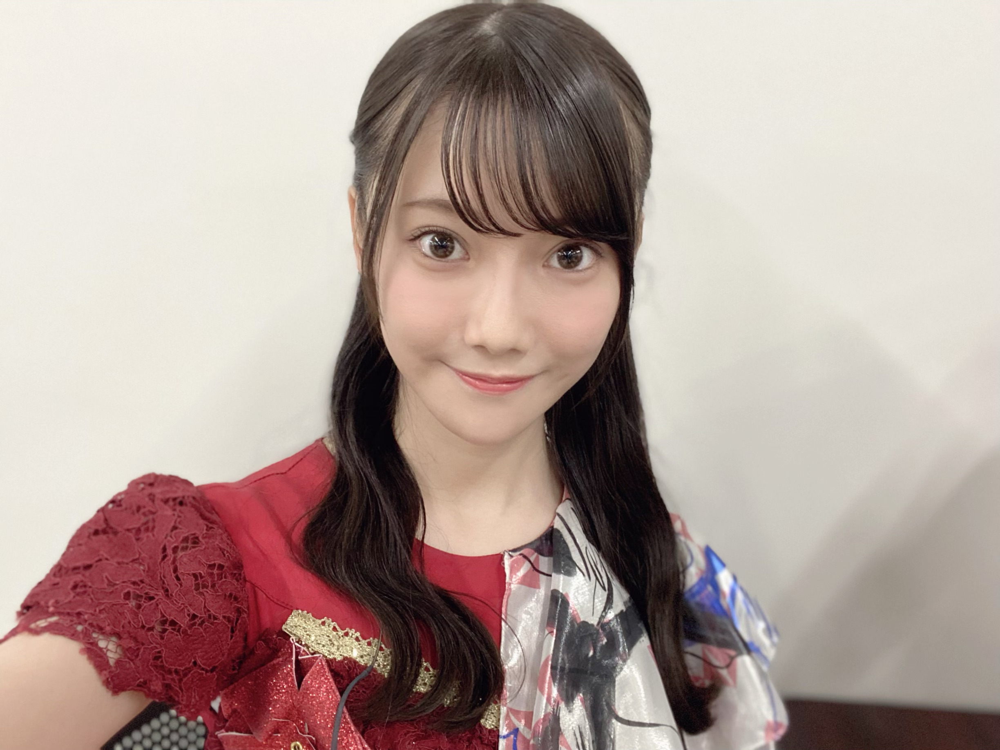
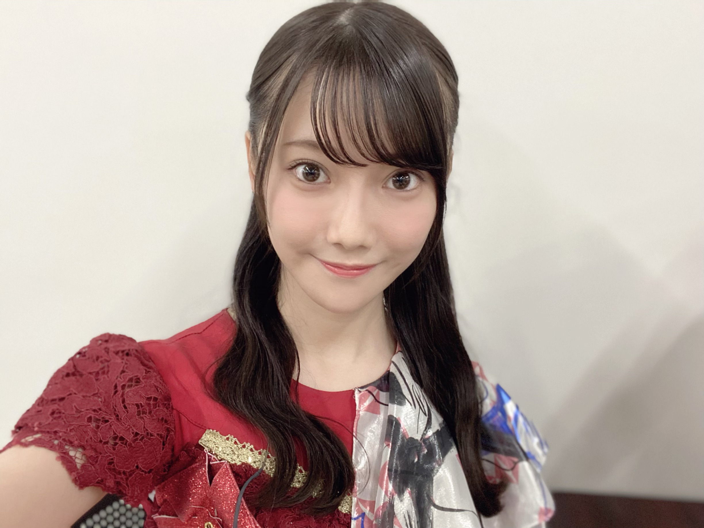

2020/1029Thu『さよならをありがとう。』 ☺︎ 黒見明香(16)
大切な一日。
乃木坂46 新４期生の黒見明香です。
すこーしだけ自己紹介させてください✨
♪:*:･･:*:･･:*:･･:*:･･:*:･･:*:･♪:*:･･:*:･･:*:･･:*:･･:*:･･:*:･♪
黒見 明香（くろみ はるか）
2004年1月19日生まれ 16才
香港生まれ・東京都出身です
あだ名： くろみん・黒見ちゃん
3の倍数9・6・3(くろみ)
と覚えてもらえたら嬉しいです♪
♪:*:･･:*:･･:*:･･:*:･･:*:･･:*:･♪:*:･･:*:･･:*:･･:*:･･:*:･･:*:･♪


-:-:୨୧:-:- 初めての乃木坂カラーのビブス✨
ブログやお手紙で、たくさんのコメントや感想送って下さり
本当にありがとうございます✩︎⡱
今回、初めてコメントしました！というあなたも、
こないだの続きだよー！と教えて下さるあなたも、
大切な時間を使ってお話しして下さり
本当にありがとうございます✨
あなたに出逢えた奇跡に、感謝しながら、
大事に、一つずつ全部読ませて頂いています((〃ω〃))
皆さんのことを知ることが出来る、
私の１日の中で『１番幸せな時間』です♩
明日は、馬車に乗るお姫様 璃果ちゃんですよー♬
読んでくださり、本当にありがとうございます☺︎
次回も、会えたら嬉しいなぁ✨
またねヾ(･ω･*)
くろみはるか☺︎
☆ 本日のあなたのラッキーナンバー：❹ と ❻
♪:*:･･:*:･･:*:･･:*:･･:*:･･:*:･♪:*:･･:*:･･:*:･･:*:･･:*:･･:*:･♪
・
・
・
＜ちょこっとアンコール♬笑＞
そして、お誕生日を迎えるあなたへ・・
✨HAPPY BIRTHDAY✨
どうぞ素敵な一年になりますよう✩︎⡱
♪:*:･･:*:･･:*:･･:*:･･:*:･･:*:･♪:*:･･:*:･･:*:･･:*:･･:*:･･:*:･♪
ここまで読んでくださったアナタ、ほんとうにありがとう♡
またねヾ(･ω･*)
白石麻衣さんの卒業コンサート
『乃木坂46 NOGIZAKA46 Mai Shiraishi Graduation Concert 〜Always beside you〜』
本当にありがとうございました。
♬ *。♩*。♬
余韻の覚めない中、
ココを 見てくださり ありがとうございます☺︎
乃木坂46 新４期生の黒見明香です。
すこーしだけ自己紹介させてください✨
♪:*:･･:*:･･:*:･･:*:･･:*:･･:*:･♪:*:･･:*:･･:*:･･:*:･･:*:･･:*:･♪
黒見 明香（くろみ はるか）
2004年1月19日生まれ 16才
香港生まれ・東京都出身です
あだ名： くろみん・黒見ちゃん
3の倍数9・6・3(くろみ)
と覚えてもらえたら嬉しいです♪
♪:*:･･:*:･･:*:･･:*:･･:*:･･:*:･♪:*:･･:*:･･:*:･･:*:･･:*:･･:*:･♪
-:-:୨୧:-:- 乃木坂カラーの 白石麻衣さん♡にとって最後の歌衣装、そして私に取って初めての歌衣装...
開演前、キャプテンの真夏さんに代わって
白石さんが 円陣の「掛け声」をかけて下さいました。
みんな大好きな、大好きな白石麻衣さん・・・
リハーサルから、涙しちゃうメンバーも多く
こみあげる想いを必死で抑えながら
笑顔になろうと頑張っていました。
＊
白石さんが、最後に、
『９年間、楽しい思い出ばかりで、
こんな幸せでいいのかなと思う...』
と、お話しして下さいました... ｡ﾟ(｡ﾉω＼｡)ﾟ｡
嬉しいことも辛いことも、共に乗り越えてきて下さった
大好きな先輩方、支えて下さったたくさんのスタッフの皆さま、
そして
応援して下さり、力になって支えて下さった
大切なファンの皆さま。
＊
最後の1日を、大切な先輩の卒業式を
一緒に見届けて下さり
本当にありがとうございました。
♪:*:･･:*:･･:*:･･:*:･･:*:･･:*:･♪:*:･･:*:･･:*:･･:*:･･:*:･･:*:･♪


-:-:୨୧:-:- 「世界で一番孤独なLover」で着せて頂いた、大切な深紅の衣装です
キャプテンの真夏さん♡は
いっぱい、いっぱい、自分の涙を我慢して、
『みんなで声出して、盛り上げていこうねーっ！』
と明るく笑顔で、メンバーを激励し、お話してくれました...
＊
本番当日も、ギリギリまで、
白石さんと真夏さんのお二人が
「ちょっとやめてよー♡」といつもどおりの、
可愛く仲良くお話しされていらっしゃるお姿にも、
"やっぱ乃木坂だな"と、なんだか胸がジーンとしてしまいました...\\\
＊
ガールズルールでは
送ってくださった皆さんの掛け声と一緒に、
全員で笑顔で✨本編を終えることが出来て、
直接会場で会うことは叶わなくても、
皆さんのパワーを、お姿をいっぱい感じて、
本当に幸せでした。応援ありがとうございます。
♬ *。♩*。♬
楽屋に入っていらっしゃった白石さんが、
たまたま わたしの目の前に
座ってくださいました(*´-`)♡
白石さんご自身で、
心を込め一つ一つ、
９年間の思いをかみしめるように
メイクをされ、準備をされていらっしゃる
凛とした美しいお姿✨に
目を奪われてしまいました。。
＊
一人、勇気をふりしぼって、
ご挨拶させて頂いたとき、
柔らかい笑顔で、優しくお話しして頂いたこと、
ずっとずっと忘れません。
大切な想い出です✩︎⡱
＊
これからも、ずっと乃木坂を
私たちの成長を、見守っていて下さる素敵な大好きな方です。
＊
白石さんが、先輩方が連れてきて下さった坂を
これからも、あなたも一緒に、
悩んだり遠回りしたりしながらも、
上ってくれたら嬉しいです(*´-`)
♪:*:･･:*:･･:*:･･:*:･･:*:･･:*:･♪:*:･･:*:･･:*:･･:*:･･:*:･･:*:･♪

-:-:୨୧:-:- 愛される白石麻衣さん♡の 思い出と愛が詰まっている会場の装飾✩︎⡱
♪:*:･･:*:･･:*:･･:*:･･:*:･･:*:･♪:*:･･:*:･･:*:･･:*:･･:*:･･:*:･♪
-:-:୨୧:-:- 愛される白石麻衣さん♡の 思い出と愛が詰まっている会場の装飾✩︎⡱
長いたくさんの歴史の、最後の年に、
ご一緒させていただけたこと、
一生忘れません。。。
会場のホールにも、お花にも、
白石麻衣さんを応援する皆さんからの
愛がたくさん、たくさん溢れていました (*ˊᵕˋ*)੭
＊
わたし自身は、白石さんの優しいお顔を見て、
泣かないよう...笑顔がぎこちなくなっていたり...
たくさんの反省があります。。。
＊
それでも、乃木坂のメンバーとして
教えて頂いた大切なこと
先輩たちが見せて下さった美しいお姿、
ひたむきさ、努力、感謝、そして笑顔・・・
必ず、大切な乃木坂に、少しでも役立てる人となれるよう
教えに生かして、精一杯努めます (. ≧ω≦)ﾉ
♬ *。♩*。♬
⚫︎笑顔で見送ってあげてください。私もパソコンの前で見送ります！！
⚫︎らじらーで徳井さんが言ってた「卒業は何かの入学」というのを参考に、これからの活躍を応援。
⚫︎らじらーで徳井さんが言ってた「卒業は何かの入学」というのを参考に、これからの活躍を応援。
ステップアップなんだよ、夢を叶えて旅立つんだよ、ジコチューのように「人生はあっという間だ！」なんだよ・・・と、コメントで励ましやアドバイスたくさん教えてくださって本当にありがとうございます。
一つ一つ大切に、胸に刻んで、
今、寂しい気持ちを奮い立たせています><
⚫︎乃木坂工事中で中田花奈さんがボードに「くろみ」って書いてくれたね！凄いね！
⚫︎お二人は、今後も芸能活動されるみたいですので、またご一緒出来たら良いですね。
花奈さんの解答びっくりしました！((〃ω〃))
そして嬉しくて、
しばらく動けなかったです。。。
"乃木坂をよろしくね(・ωｰ)" と冗談まじりに、
掛けてくださった言葉を、何度も何度も思い出しています。
＊
いつの日か、またご一緒させていただける日が来るよう
わたしも全力で頑張らなくちゃですね！
寂しいですが・・・
ご卒業おめでとうございます✨
白石麻衣さん♡中田花奈さん♡ お二人のこれからが
幸せあふれる楽しい毎日でありますように (*ˊᵕˋ*)੭
♪:*:･･:*:･･:*:･･:*:･･:*:･･:*:･♪:*:･･:*:･･:*:･･:*:･･:*:･･:*:･♪
-:-:୨୧:-:- 初めての乃木坂カラーのビブス✨
今月の 「TOKYO IDOL FESTIVAL オンライン2020」そして
「乃木坂46 NOGIZAKA46 Mai Shiraishi Graduation Concert
〜Always beside you〜」
と、練習するにあたって、
初めての「乃木坂カラーのビブス✨」を
使わせていただきました！
＊
坂道研修生で、初めて"東名阪ツアーをさせて頂ける"と聞いて、
真っ白なビブスを頂いたあの日の感動も、
乃木坂カラーの、いつも映像で見て憧れていた
先輩方とお揃いのビブスを頂いたこの日の感動も、
昨日のことにように、鮮明に覚えています。
＊
新4期の5人で
「うわぁ....((〃ω〃))」と目を見合わせて幸せをかみしめていました。
♬ *。♩*。♬
⚫︎オンラインだけど、見送ることが出来てよかったです！
ライブビューイングのチケットも当てられず、
"あぁ...今頃Overtureかなぁ。。。" と自分が情けなく、
自分の運のなさに、悔し涙した経験を思い出しています。
今も時々、願いを込めながら、息を潜めて、
チケット当落メールを確認する夢を見る日があります...\(//∇//)\
＊
直接ライブで皆さんのお顔を見て
楽曲を伝える、一緒に空間を共有することが出来なくて
とても悔しいけれど,,,
この景色を、表情を
オンラインでたくさんの方に、
お届けできたこと、
白石麻衣さんの卒業する日を
見守っていただけたことを、嬉しく思います☺︎
＊
＊カタカナ苦手な私には、
「ライビュヴーインあるって！」友達に送って
「なんか間違ってるけど、察した」・・・Σ（ﾟдﾟll）
と返された思い出があります\(//∇//)\
『らいぶ・びゅーいんぐ』 難問ですよね！笑
（今、辞書で調べてから書きました汗）
♪:*:･･:*:･･:*:･･:*:･･:*:･･:*:･♪:*:･･:*:･･:*:･･:*:･･:*:･･:*:･♪
【 ノギザカスキッツACT2 】
とってもありがたいことに、
11月10日スタート『２nd シーズン』
放送させて頂くことが決定しましたー！
３期生の先輩方も参戦されてパワーアップです✩︎⡱
⚫︎先輩方を見たら、一緒にお芝居をしたら、また何か「ヒント」になるかもしれないね。
4期生の皆んなで、さすが！先輩方はすごいね✨と
演技力・トーク力と感動していました〜
私たちもパワーアップしなければですね！
楽しんで、頑張るねー (*ˊᵕˋ*)੭
♬ *。♩*。♬
⚫︎「an・an」さんに、来月メンバー皆で登場と聞きました。初の女性誌かな!?
こちらも、嬉しすぎることに、全員登場させていただきます♪
またオフショットなど載せさせてくださいねヾ(･ω･*)o
♪:*:･･:*:･･:*:･･:*:･･:*:･･:*:･♪:*:･･:*:･･:*:･･:*:･･:*:･･:*:･♪
♪:*:･･:*:･･:*:･･:*:･･:*:･･:*:･♪:*:･･:*:･･:*:･･:*:･･:*:･･:*:･♪
ブログやお手紙で、たくさんのコメントや感想送って下さり
本当にありがとうございます✩︎⡱
今回、初めてコメントしました！というあなたも、
こないだの続きだよー！と教えて下さるあなたも、
大切な時間を使ってお話しして下さり
本当にありがとうございます✨
あなたに出逢えた奇跡に、感謝しながら、
大事に、一つずつ全部読ませて頂いています((〃ω〃))
皆さんのことを知ることが出来る、
私の１日の中で『１番幸せな時間』です♩
ー " 夢を見るなら君と一緒がいい " (*´-`)
直接お話しできる時が、 待ち遠しいです✩︎⡱
＊
寝不足が続いたり、すっかり肌寒くなってきちゃって、
なんだか体調イマイチだよー、疲れちゃったよーって方も
本当に、今日も一日 お疲れ様でした✩︎⡱
きっと心も、身体も、しんどい時もあるかと思います。。
どうぞ、皆さんが 少しでも
ひとときリラックスできますように...✩︎⡱
と願っています(*´-`)
初めて会える日を、楽しみに待っています♪
＊
かぼちゃの馬車に乗ってきた奈於ちゃん♡
＊
寝不足が続いたり、すっかり肌寒くなってきちゃって、
なんだか体調イマイチだよー、疲れちゃったよーって方も
本当に、今日も一日 お疲れ様でした✩︎⡱
きっと心も、身体も、しんどい時もあるかと思います。。
どうぞ、皆さんが 少しでも
ひとときリラックスできますように...✩︎⡱
と願っています(*´-`)
初めて会える日を、楽しみに待っています♪
＊
かぼちゃの馬車に乗ってきた奈於ちゃん♡
明日は、馬車に乗るお姫様 璃果ちゃんですよー♬
読んでくださり、本当にありがとうございます☺︎
次回も、会えたら嬉しいなぁ✨
またねヾ(･ω･*)
くろみはるか☺︎
☆ 本日のあなたのラッキーナンバー：❹ と ❻
♪:*:･･:*:･･:*:･･:*:･･:*:･･:*:･♪:*:･･:*:･･:*:･･:*:･･:*:･･:*:･♪
・
・
・
＜ちょこっとアンコール♬笑＞
♬ *。♩*。♬
⚫︎私は櫻坂46新2期生とのエピソードも教えてください。
○ライブ前にも 激励のメッセージを送ってくれて
すごく力になりました！温かい大切な仲間です☺︎
♬ *。♩*。♬
⚫︎和ラーにお湯を入れて、3分待って、ふたをとったら、黒見ちゃんのサインが出てきた。
○嬉しいー (*ˊᵕˋ*)੭
いっぱい召し上がってくださいね✨
♬ *。♩*。♬
⚫︎次回ブログは10月29日。去年なら研修生ツアー初日の前日ですね。
○もう一年ですね。とっても緊張していましたー汗
大沼晶保ちゃんと部屋でドキドキしていました☺︎
♬ *。♩*。♬
♬ *。♩*。♬
⚫︎くろみん勉強頑張って(/･ω･)/あっ、新4期生の中で「おバカキャラ」と聞かれたら、「くろみん」と選んだ子も確か居たよね？（笑）
⚫︎追試はもう終わりましたか？ まだでしたら、がんばってください！
○今日数学のテスト受けてきたよー\(//∇//)\笑
⚫︎追試はもう終わりましたか？ まだでしたら、がんばってください！
○今日数学のテスト受けてきたよー\(//∇//)\笑
頑張ります！ありがとうー☺︎
♬ *。♩*。♬
⚫︎今日はフィンランドのサンタクロースから大切なお知らせがあったよ。
「クリスマスは中止しない」（byサンタ）コロナ渦で心配だったけど、良かったね。くろみん。何をお願いする？プレステ？ステッキのリベンジ？
♬ *。♩*。♬
⚫︎今日はフィンランドのサンタクロースから大切なお知らせがあったよ。
「クリスマスは中止しない」（byサンタ）コロナ渦で心配だったけど、良かったね。くろみん。何をお願いする？プレステ？ステッキのリベンジ？
○本当に良かったです((〃ω〃))
子どもたちも幸せになるといいなー✨
わたしも、こっそり熟考します笑フフ
♬ *。♩*。♬
＜ゲームコーナー☺︎＞
＜ゲームコーナー☺︎＞
⚫︎ プロスピのイベントのキャラバンは余裕があれば
走ったほうがいいと思うよ！
⚪︎キャラバン走ったよ！無事Sランク契約書もらえたよ〜☺︎
⚫︎ 僕は、プロスピでは、エナジーが少なくてあまり引けてない。でもこれから頑張ってエナジーを貯めて頑張るね。
⚪︎うん！エナジー貯めるの時間かかるけど、一緒に頑張ろう！
⚫︎ 黒見ちゃんはアニバーサリーの無料ガチャで誰引いたの？
⚪︎もともと持ってた選手だよー！
今回ので極み＋になったよー☺︎
⚫︎プロスピ、フレンドになって〜
いつかあなたとフレンドになれたらいいなぁ☺︎
フレンドになったら一緒にガチャとか引きたいなぁー！
⚫︎ 月曜日はドラフト会議があったけど、くろみんはチェックした？
⚪︎見たよー！残念ながら指名されなかった選手もこれからも活躍が楽しみだね！あなたはどうだった？
♬ *。♩*。♬
夏目漱石のお話、のぎ動画のコメンタリー観たよ！炭治郎みたいというお話、朗読劇のこと、席替えのエピソード、辛い物のお話、かつ家の感想、先輩方の大切な言葉、BOØWYさんの曲の想い出、Perfumeさん、バンドACID BLACK CHERRYさん、Mrs. GREEN APPLEさんのこと、前髪のお話、深川麻衣さん♡悠理ちゃん♡のこと、聖地巡りのお話、Wピースアレンジ方法、ハロウィンのお話も、蜜香屋さん、思いやりを表す恕・努のお話、麻雀のお話も(奈於ちゃんに教わりたいな☺︎)ありがとうございます！一つ一つ大切に読ませて頂いています。
お仕事やアルバイト、部活が大変だよー！勉強や模試だよー、回復中だよーという方も、大変だよねー！お疲れ様！一緒に頑張ろうねーヾ(･ω･*)o
タオル来たよ！ハロウィン写真申し込んだ！らじらーで気になって来たよー、ファンで良かった書いてくれたお話、じゃあね。の歌詞のこと、かっきーのMCの「みんなまいやんに憧れてオーディションを受けた」というお話も、とても心に滲みています(；ω；)
タオル来たよ！ハロウィン写真申し込んだ！らじらーで気になって来たよー、ファンで良かった書いてくれたお話、じゃあね。の歌詞のこと、かっきーのMCの「みんなまいやんに憧れてオーディションを受けた」というお話も、とても心に滲みています(；ω；)
♬ *。♩*。♬
＜お誕生日おめでとうございます✨＞
◎10月31日金川紗耶ちゃん♡
ダンスが上手で、スタイルも美しく、女性らしいところにも憧れています。
よくダンスを一緒に復習してくれてありがとう☺︎大好きだよー。
◎11月1日は渡辺みり愛さん♡
「わからないことあったら遠慮せずに聞きにおいで」と言ってくださり、後輩からも愛されている心優しく、カッコいい憧れのお姉さんです。
そして、お誕生日を迎えるあなたへ・・
✨HAPPY BIRTHDAY✨
どうぞ素敵な一年になりますよう✩︎⡱
♪:*:･･:*:･･:*:･･:*:･･:*:･･:*:･♪:*:･･:*:･･:*:･･:*:･･:*:･･:*:･♪
ここまで読んでくださったアナタ、ほんとうにありがとう♡
またねヾ(･ω･*)
2020/10/29 18:12

PROFILE
新4期生リレー
202104
| SUN | MON | TUE | WED | THU | FRI | SAT |
|---|---|---|---|---|---|---|
| 1 | 2 | 3 | ||||
| 4 | 5 | 6 | 7 | 8 | 9 | 10 |
| 11 | 12 | 13 | 14 | 15 | 16 | 17 |
| 18 | 19 | 20 | 21 | 22 | 23 | 24 |
| 25 | 26 | 27 | 28 | 29 | 30 | |

コメント(234)
黒見ちゃん卒コンみたよ、、！♡
あと今日から毎日コメントまた出来るよ、！笑
沢山書いてくれてありがとう
次回のブログも楽しみにしてるね
まいやん卒コンはただただ感動、そしてくろみん乃木坂単独公演デビューおめでとう(^^)
最高のステージでした！
くろみんのキレイなマイクの持ち方大好きです(^^)
サヨナラのサビのまいやんとの
スリーショット最高良い笑顔でした。
きっとこの経験が次のライブに
そしてかけがえのない思い出となった
と思うとひとりのファンとして感無量です。
東名阪ライブから約一年、
これでついに乃木坂全員のライブも経験して
名実ともに乃木坂の一員になったね。
おめでとう。
真夏とまいやんのやりとりを
見られて良かったね。
《最後に質問》
ライブやリハの裏エピソード
教えてほしいな～
先輩とは話した？？
乃木坂を好きになってよかったと思える本当に素晴らしいライブでした！
偉大な先輩の卒業は本当に寂しいですが3.4期生が今まで以上の乃木坂を見せてくれると期待してます
質問：ピザのトッピングは何が好き？？
まいやんほんとに輝いてて感動した〜！黒見ちゃんとまいやんが夜明けで隣なった時2人ともすっごく綺麗だったよ！
卒業する人はその瞬間が1番綺麗になるって思ってるけど、これからを担う黒見ちゃんもとっても綺麗でした✨
そんな余韻中、課題が溜まりに溜まりまくって今日1日大学に行かなくてよかったから課題終わらせたよ！！頑張った！
褒めて〜笑大変なことがあっても黒見ちゃんのブログのために頑張ってます！！ブログが更新されるたびに大好きなってる！
早く会いたいな〜話したいな〜そんな日がいつか来るように願ってます、
●今度友達の誕生日なんだけど、どんな誕生日プレゼントがいいと思う？？今考えてるのはコスメなんだけどおすすめあったら教えて欲しいな〜
また今度のブログも楽しみにしてるね〜！
お疲れ様＆ブログありがとう！
白石さんへの想い、乃木坂46への想い、そして、自分の決意、色々、話してくれて、ありがとう！
リハも含め、コンサート、お疲れでした！
涙をこらえながら、パフォーマンスする、くろみんを、見ました！素敵でしたよ！
ありがとう！
寒くなってきたので、くろみんも、体調を崩さないように、してください。
はーちゃん（おがちゃん）
白石さん中田さん卒業悲しいね
これからもくろみんを応援し続けるから体調にも気をつけて頑張ってね！！☺️
ライブお疲れさまでした
うわーー、可愛いこのしゃがんでるくろみん(*´ω｀*)♡
一緒に同じステージを立ててよかったよね(｡>﹏<｡)
目の前にイチャイチャする2人を見れてくろみん、きっと幸せの時間だったよね（笑）
白石の乃木坂人生はここで一旦終わって、そしてくろみんと後輩たちの乃木坂はこれからだ(ง ꙭ)ง
びっくりしているくろみんの姿を見たかった(*´ω｀*)でもさすが花奈だったなあ(｡>﹏<｡)
次回の卒業回も楽しみ(;_;)
今回は沢山の衣装も着れて良かったよね＼(^o^)／名前入りも良いなあ(｡>﹏<｡)
ビブスを貰った5人の様子を見たかったなあ(*´ω｀*)（笑）
ライブビューイング言えないくろみんは可愛すぎるよ(｡>﹏<｡)♡♡♡♡（笑）
今度カタカナの早口言葉、ぜひ挑戦してほしいなあ（笑）
ノギザカスキッツACT2は本当に待ち切れないよ((o(´∀｀)o))ﾜｸﾜｸ
ANANの方も凄く楽しみ＼(^o^)／
えーー？くろみんもかぼちゃの馬車を乗れよ～！！♡（笑）
くろみんは今年もいい子だったの？じゃないとそもそもサンタさんが来ないよ～～（笑）
これからも頑張って(/･ω･)/
おつかれさまです。
今日は、くるりの『ロックンロール』を
聴きながらコメントを書いています。
白石麻衣さんの卒業コンサート
しっかり見ましたよ。
黒見ちゃんの出てるところは、
あっ、黒見ちゃんだ…と思っていました。
ちゃんとね。
白石麻衣さんについても話したいことはたくさんあるけれど
今日は黒見ちゃんを観た感想を書こうかな…
4期生の『夜明けまで強がらなくていい』
すごく良かったね。
黒見ちゃんの気合いもたくさん感じました。
まだまだたくさん緊張した？
良いと思います。
その緊張は、きっと黒見ちゃんを強くしてくれますよ。
黒見ちゃんのダンスは、もっと元気いっぱいかと思ったら
すごく上品でしっとりしてますね。
ガールズルールも、あの中でもかなり真面目にやってて
偉いなぁと思いました。素敵です。
手の振付が上手です。一生懸命真面目に練習したのがわかりますよ。
もっともっと観たいな…
円陣、すごく良い文化ですよね。
気合が入ると思います。
黒見ちゃんは、みんなのリズムに遅れずについていけましたか？
オンラインでのライブだと
黒見ちゃんを見つけたい！と思ってもカメラの映しているところしか見られないのが残念です…笑
あと、終わった後にファンの人たちと語り合えない！
これは本当に大きな損失です……
でも、白石麻衣さんからの大きな大きな愛と
黒見ちゃんのエネルギーを感じましたよ。
ありがとうね！
ノギザカスキッツACT2本当に楽しみにしています。
黒見ちゃんの活躍、ちゃんと見守りますからね。
応援してますよ。
ananも楽しみにしてます。
メンバー全員だからね、乃木坂友達と一緒に読むと
すごく盛り上がるんだよ〜〜
黒見ちゃんのブログ
本当に毎回楽しみにしています。
変化の少ない今年は、特に5日に一度の文通が、
僕の日常にエッセンスを与えてくれます。
I am looking forward to reading your NEXT blog.
that makes my heart UP and HIGH.
今日のお気に入りは、ビブスを着た黒見ちゃんです。
とっても可愛いですよ。
今日はダブルピースがない！なので寂しいです…
なんてね！
ありがとう〜！
それでは、また5日後に
かがやき
まいやんの卒コン、本当に素敵でした⸜❤︎⸝
始まった瞬間号泣してしまって…くろみんも見つけられて良かったです✧︎
ものすごく尊くて美しくて、すっごく綺麗なものを見れました。
乃木坂を好きになれて良かったです！！
くろみんのパフォーマンス、一生懸命感があって素敵でした☺︎︎︎︎
英検2級落ちちゃいました…泣
英検落ちたショックでかなり点数の良かったテストが返ってきてもあまり嬉しくなかったです笑笑
でもまたがんばるよ！！！
今度部活のコンクールがあるので頑張ります！
クラリネット吹いてるんです( ˙꒳˙ )
またコメントするね！
くろみんもがんばってください✩*.ﾟ
大学1年生の ひなこ
ライブお疲れ様！！
私はお仕事で見られなかったんだけど、きっと素敵な一日になったんだろうなぁ、！
また会場でくろみんが見られる日を楽しみにしてるよ！
質問！
ライブでの1番の思い出は？？
メンバー同士の絡みとかも何かエピソードあったら教えて欲しい！
ひなこ
昨日はライブお疲れ様でした。
ほんとうに感動のライブでした！
まいやんは誰からも愛されていたんだなと改めて実感したよ！
幸せな時間をくれてありがとう！
新４期生としては、初めて臨む本格的ラ
イブ、それがまいやんの卒コンという
大舞台。
ほんと良く頑張ったと思います。乃木坂
色のビブスが効いたかな。
４期生全員でパフォーマンスした夜明け
まで強がらなくていい、圧巻でした。
まいやんが言う通り、乃木坂には夢が沢
山詰まってます。くろみん、その一つ一
つを 叶えて行ってね。
くろみちゃんもバッチリ見えてましたよ！！
これからは先輩方が登ってきた坂の続きをかけ上っていく姿を見届けます！！
頑張れーー！！
自分もしっかりと見届けたよ
まいやんには心からありがとうとお疲れ様
をいいたいです。
自分は男だけど1人の人間、社会人として
リスペクトできるそういう存在だなって
思います。
これからもまいやんと乃木坂のことを
応援していくね！
プロスピのアニバ第2弾は多分明日かな？
いい引きができるといいね！
朝と夜は寒くなってきたけど体調には
気をつけてね！
こんばんは。
今日も一日お疲れ様。
ブログ更新ありがとう!
昨日は自分自身の感情が、全部溢れた様な気がしました。
けれど、このブログの白石さん、真夏さんのエピソードを読んだら、なんだかまた、こみ上げて来ます…
一瞬一瞬が、大切な時間に感じた、本当に素敵な卒業コンサートでした。
また、ここから頑張って行きましょう!
乃木坂をよろしくね(・ωｰ)と、言ってくれた花奈さんのためにも…
歌衣装、とても似合っているよ!
ラッキーナンバーは「4」と「6」か、嬉しいな。
では、またﾉｼ
#199
今日とても悲しいことがありました。部活のキャプテンが膝の靭帯を切ってしまってこれから半年くらいいっしょに部活が出来なくなってしまいました。先輩たちが引退するのは5月くらいなので本当にもういっしょにプレー出来ないかもしれません。今回のコロナで当たり前が当たり前じゃないことを痛感したつもりでいました。先輩とプレーする時間を精一杯楽しんでいたつもりでもいました。だけど、やっぱりいざこういう状況になるとすごく悲しくてたくさん泣いてしまいました。でも、今週の日曜日に大事な大会があります。私は1年生だけど、その大会に出場するかもしれません。だから、先輩を悲しい気持ちにさせないように頑張ろうと思っています。長々とすいません。結局何が言いたいかというと、これからも人との出会いを大切にしたいなというのと、くろみんも乃木坂のメンバーなど人との出会いを大切にしてほしいなと思ったからです。
これからも応援してます！ みつき
全て読ませていただきました！
昨日はライブお疲れ様！感動した、、。
WhiteHighのWhiteさんが卒業したけれど、いつか明香さんが入って、BlackHighとして復活しないかな。。なんて思いました笑
よく休んでねー！
コメント、失礼します！
ブログ更新、ありがとう！
まいやんの卒コン、お疲れ様でした！
トラブルもあったけど、無事全て見ることができましたー。
まいやんとくろみんが同じ画角に映ってる最初で最後のライブだから、目に焼き付けましたよー。
くろみん可愛かったなー。
そして、まいやんは美しすぎましたね。
正しく発光してました笑笑
メンバーがまいやんの両隣に立って歌唱する場面が特に印象的だったなー。
まいやんがメンバー一人一人に優しい目線を向けて、これからの乃木坂を託してるって感じがしました。
皆美しい涙と笑顔が入り交じる、そんな表情をしてたね。
まいやんが掛け声をかけてくれたんだね。
より一層力が入ったんじゃない？
まいやんの乃木坂への強い思いをこれからも引き継いでいけると良いね。
でもくろみんたちを見てたら大丈夫そうだなー、これからの乃木坂も楽しみだなーと思ったよ。
かなさんもまいやんも、ずっと幸せに暮らして欲しいね。
それでは、この辺で。
おやすくろみんー
はるか！
やっほー！
ひろき(Yandji)です☺️
ブログ更新ありがとー！！！
質問タイムー！！！
いまメンバー間で流行ってることとかある？
また、コメントするね！
では、またねー！
ひろき(Yandji)より
体調悪いのが治りました(^^)
引き続き勉強頑張ります、
昨日のまいやんの卒コン最高だったなぁ(ˊᵕˋ)
またライブが客席入れて出来るようになったら
くろみんやメンバーにに会いに行きたいなー
またライブに行けるようになりますように( ¨̮ )
まずはライブお疲れ様。
先輩との初ライブどうでした？
めっちゃ緊張もしたと思うし、それプラスでまいやんの卒コンやったもんね笑
くろみんたちも先輩たちと同じようにしっかりパフォーマンスできてたよ！
まいやんも後輩たちが一生懸命リハしてくれてるって言ってたように、動きめっちゃ揃ってた！！
みんなのまいやんへの想いが伝わってきた。
配信ライブっていう形ではあったけど、オンラインならではの演出もあってめっちゃ楽しめました！
個人的にはまいやんと各期ごとにパフォーマンスした曲が印象的やったかなぁ。
まいやんと後輩たちが1人ずつ目を合わせてるの見て、うるっとしちゃった。
昨日のまいやん綺麗やったなぁ。
じゃあね。の時は歌詞からいろんなことが思い出されて、涙が止まらんかった。メンバーの涙も綺麗でやっぱりもらい泣きしちゃいましたね。
感想は書ききれないぐらいあるから、昨日のライブはしっかりと胸の中にしまっとこうと思います。
まいやんに感謝の気持ち伝えられてほんまによかった。
くろみん的には反省もあったんかな。
何事も完璧にできることって少ないよね。
俺もハンドボールの試合で全部上手くいったことはないし、キャプテンとしても時々ミスしちゃうこともある。
でもそれを次にどう繋げられるかが大事やと思ってるから、くろみんも先輩たちから学んだことを少しでも活かせるように頑張って！！
いつも頑張ってるくろみんのことめっちゃ応援したくなる！！
なんかあったら同期のみんなに相談してみたりするのも一つの手かも！
ついにくろみんにも乃木カラービブスが！！
俺着たことないからわからんけど、めっちゃ着心地良さそう笑
そのビブス俺もほしいもん。
グッズとして売ってくれへんかな？笑
これからのくろみんが楽しみです。
今日は長くなってごめんね。
これでも書きたらへんぐらいやわ笑
本当に昨日はお疲れ様！！まずはゆっくり休んでください。
いつかくろみんに直接感想とか伝えられるの楽しみにしてます。
ではでは体調には気をつけて。
次の更新日はもう11月かぁ。
次も待ってます！いつもありがとう。
楽しみにしてました！
まいやんの卒業ライブ、、
うちは泣いちゃいました
質問してもいいですか？？
⚫️初めて買った乃木坂のグッズってなんですか？
いつ買いました？覚えてますかね？笑
うちはかずみんのポストカードと生写真です！
ずーーっと大切に持ってます！
グッズって捨てられなくて
どんどん増えちゃいますよねっ！
コメントをここまで読んでくれて
ありがとうございます！！
次のブログも楽しみにしてます！
いつも沢山書いてくれて嬉しいです！
大好きです！
ブログ更新ありがとう♡
1番初めからくろみちゃんのブログを読ませてもらってるんですが、今日初めてコメントします！見てもらえるかな〜( .. )
くろみちゃんのブログには、乃木坂への愛が沢山詰まってて、いつも読んでてしあわせな気持ちになります( ˘͈ ᵕ ˘͈ )
白石麻衣ちゃんの卒コン、私も画面の前で見たけどくろみちゃんのパフォーマンス素敵だったよ〜⸜❤︎⸝これからもどんどん活躍するのを楽しみにしてるね！そして応援してます(^_^)
チェキが当たったきよたです。
昨日はライブお疲れ様でした
一瞬でもまいやんの隣にいるくろみん
それだけで感動で涙しました
ずっと「テェッシュープリ〜ズ」でした
しかもまいやんとの楽屋話しまであるなんて！ホント良かったね
〈夜明けまで…〉ではマイクを持った立ち姿がキマってて凄くキレイだったよ。さすが乃木坂46の黒見明香でした
ラスト出れなかった残念さはちゃんと分かってるよ
白石麻衣の卒コンに参加できて良かった
それだけでも今後の財産になるね。ありがとう
新4期生の初ライブ輝いていましたよ。
まいやんが卒業して心にポッカリと穴が空いた感じですが、
これからも乃木坂をずっと応援していきます。
乃木坂にとって新しい船出ですね。
楽しみです。
本当に悲しかった、感動した
まいやんの笑顔、声、優しさ、姿、、、
みんなまいやんの何もかもが好きだった。
そんなまいやんをこれからも応援したいです
「やっぱ乃木坂だな‼️」
昨日はお疲れ様！
余韻の覚めない中
ブログ更新ありがとう！
素敵なかけがえのない経験を大切に
一歩一歩坂を登っていってね！
それから、コメント拾ってくれて
ありがとう
くろみんと本当にお話できている
この幸せに感謝して
これからも応援していくね
いつか再現した写真アップ
していただけたら永遠に
笑顔になれます。
緊張してたのが伝わった・・・そのうち緊張してもくろみちゃんの最高の笑顔が出せるようになるといいね！！
くろみちゃんははじける笑顔がすっごい似合うのでもっと笑ってね(＾◇＾)
まいやんの卒コンとっても良かった…まだ、余韻に浸ってます。
まいやんのドレスとっても綺麗でした！
とくに、松村さんの手紙に涙腺崩壊しちゃいました…
卒業は寂しいけどこれから頑張って欲しいです！
ノギザカスキッツ続きが発表されてとてもうれしいです！1週間の楽しみが無くならなくて安心しました！次から3期生もきてとても楽しみにしてます！
今日席替えしたんだけど、今までは後ろから2番目の席で、今回前から2番目になっちゃっていきなりの前で動揺してます…
くろみん、座席の前になったことある？？なんかエールくれると嬉しいです…
また、ブログ更新楽しみにしてます！体調には気をつけてね！
コメントする